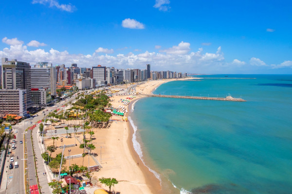
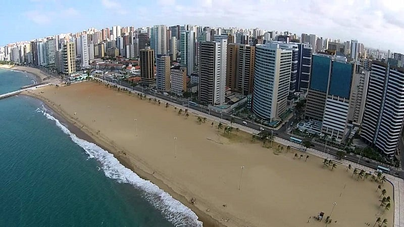
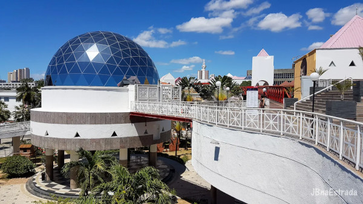
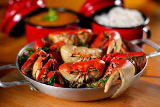
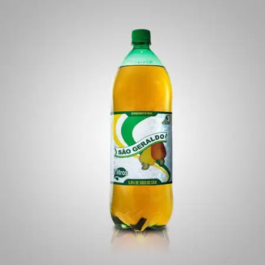

Fortaleza
Fortaleza, a capital do estado do Ceará, é uma cidade encantadora com praias deslumbrantes, cultura vibrante e uma atmosfera acolhedora.
Conhecida como a "Terra do Sol", Fortaleza oferece aos visitantes uma experiência única com suas belezas naturais e herança cultural.
A cidade é famosa por suas águas quentes, culinária deliciosa e festas animadas.

Praia de Iracema - Fortaleza
Praia de Iracema
A Praia de Iracema é uma das praias mais famosas de Fortaleza. Com sua orla repleta de bares, restaurantes e hotéis, é o local ideal para quem deseja aproveitar a praia durante o dia e a vida noturna agitada. A Ponte dos Ingleses, conhecida como Ponte Metálica, é um marco da praia e oferece uma vista espetacular da cidade.

Centro Dragão do Mar de Arte e Cultura
O Centro Dragão do Mar é um complexo cultural que abriga museus, teatros, cinemas e espaços artísticos em Fortaleza. É um local de referência para a cena cultural da cidade, oferecendo exposições, apresentações de teatro, música ao vivo e muito mais. Além disso, é um ótimo lugar para aprender sobre a história e a arte do Ceará.

Caranguejada
A caranguejada é um prato típico da região, preparado com caranguejos frescos cozidos com temperos, servidos em um molho delicioso. É uma experiência gastronômica que os amantes de frutos do mar não podem perder. A caranguejada é frequentemente servida em barracas de praia e restaurantes especializados em frutos do mar em Fortaleza.

Cajuína
A cajuína é uma bebida típica do Nordeste, feita a partir do suco de caju concentrado, sem álcool e sem adição de açúcar. É uma bebida refrescante e doce que complementa perfeitamente as refeições locais. É uma opção popular em Fortaleza para se hidratar e desfrutar do sabor natural da fruta caju.
